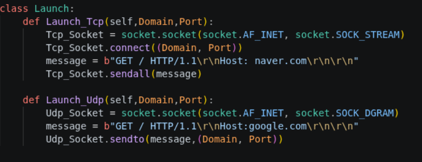
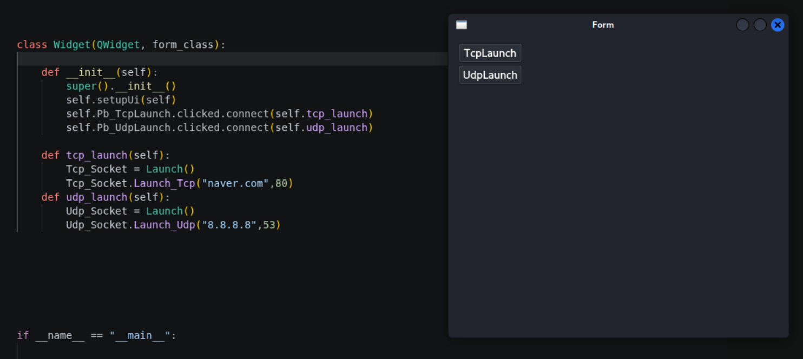

정보보호특강에서 LTE터널링에 대한 개념과 구현을 보았는데 굉장히 흥미가 가서 구현해보고자 한다.
하지만 필자는 네트워크에 대한 지식이 전무하고 개발 지식또한 전무하다
천리길도 한걸음부터라 했던가
기초부터 차근차근 진행할 예정이다.
6개월~1년 정도 걸리면 좋을것 같다는 생각이든다.
우선 필자는 C언어를 모르기때문에 python으로 구현하려고 한다.
Qt라는 프로그램을 사용하려고 하는데 이거 깐다고 반나절 걸렸다. pyqt도 qt처럼 통합개발환경(?)인줄 알았지만 vscode나 다른 곳에 깔아서 쓰는것이었다.
맨처음 해볼 것은 직접 tcp와 udp 패킷을 쏴보는것이다.

socket을 import해서 사용했는데 함수들이 재밌었다.
AF_INET는 ipv4를 주소체계를 사용하겠다는것이었고 SOCK_STREAM과 SOCK_DGRAM은 각각 TCP인지 UDP인지를 말하는 것이다. inet에는 도메인이, stream과 dgram에는 포트번호가 들어가는것 같았다.
sendto 와 sendall 이 있는데 sendall 은 단순히 보내는게 아니라 3way handshake기능을 담당하고 있는것 같았다.
sendto 는 말그대로 보내기만 하더라.
그다음으로는 위젯을 만들어서 직접 쏠수 있게 했는데 이 작업도 하루 걸렸다..

하루씩이나 걸릴건 아니었는데 삽질을 많이했다..
나는 self가 왜 들어가는지.. 계속 의문이었는데 gemini형님께서 저게 있어야 위젯이 살아남아있을때 계속 남아있는거라 하셨다.
(함수가 끝나도 사라지지 않는)
init은 내가 호출을 하지 않아도 프로그램을 실행했을때 자동으로 호출되는?그런거라고 하셨다.
버튼이랑 함수 이어주는거 너무 힘들었고 아직 사용해보지 못한 버튼들이 많아 더 삽질할 예정이다..
한계 :
일단 한번 시도라도 해보는게 목표라 그냥 썼는데 사실 내가 원하는 함수들은 아니다. 내가 원하는것은 헤더 각각을 내가 지정해서 보내는 그런 원시적인(?)함수였다. 그리고 쓸데없는것에 시간이 너무 많이 걸렸다. (Qt 다운로드하는시간, Qt widget만드는시간...)
그 다음 :
ethernet 헤더를 쪼개서 각각의 역할을 이해하고 fcs를 계산하는게 그 다음 목표이다.